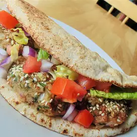

Egyptian Falafel

Description
Falafel, or ta'ameya as it's called in Egypt, is an all-time favorite street food. In most parts of the Middle East, falafel is made with ground chickpeas. However, in Egypt, it's maked it with dried fava beans. They are best served with pita bread, tomato, onions, and tahini sauce.
Ingredients
- 2 cups dried split fava beans
- 1 red onion, quartered
- ½ cup fresh parsley
- ½ cup fresh cilantro
- ½ cup fresh dill
- 3 cloves garlic
- 1 ½ teaspoons ground coriander
- 1 ½ teaspoons salt
- 1 teaspoon ground cumin
- 1 cup sesame seeds (Optional)
- vegetable oil for frying
Steps
- Place fava beans in large bowl and cover with several inches of water. Let soak, 8 hours to overnight. Drain.
- Combine soaked fava beans, red onion, parsley, cilantro, dill, garlic, coriander, salt, and cumin in a food processor; process to a dough-like consistency.
- Heat a skillet over medium heat. Add sesame seeds; cook, stirring occasionally, until toasted, about 5 minutes. Transfer to a large plate.
- Shape fava bean mixture into balls. Roll in sesame seeds to coat.
- Fill a large saucepan 1/4 full with oil; heat over medium heat. Fry fava bean balls in batches until golden brown, 3 to 5 minutes. Drain on paper towels.